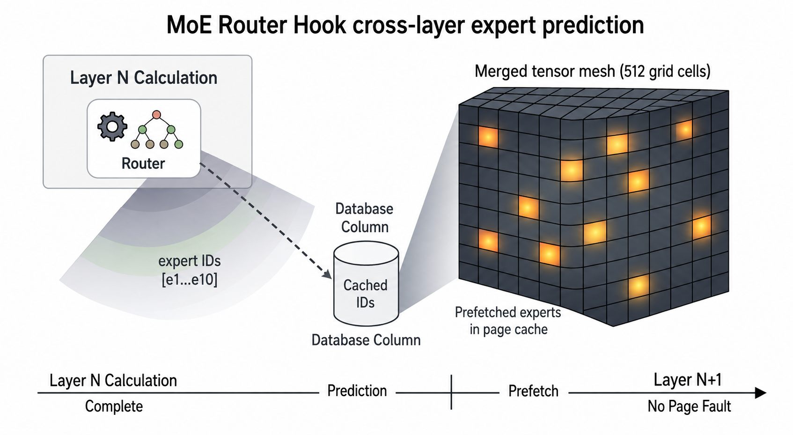
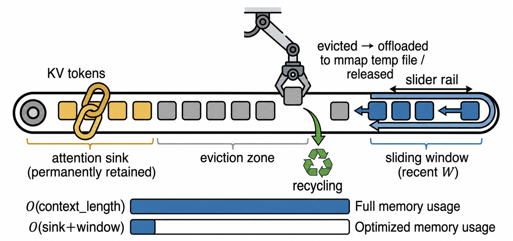
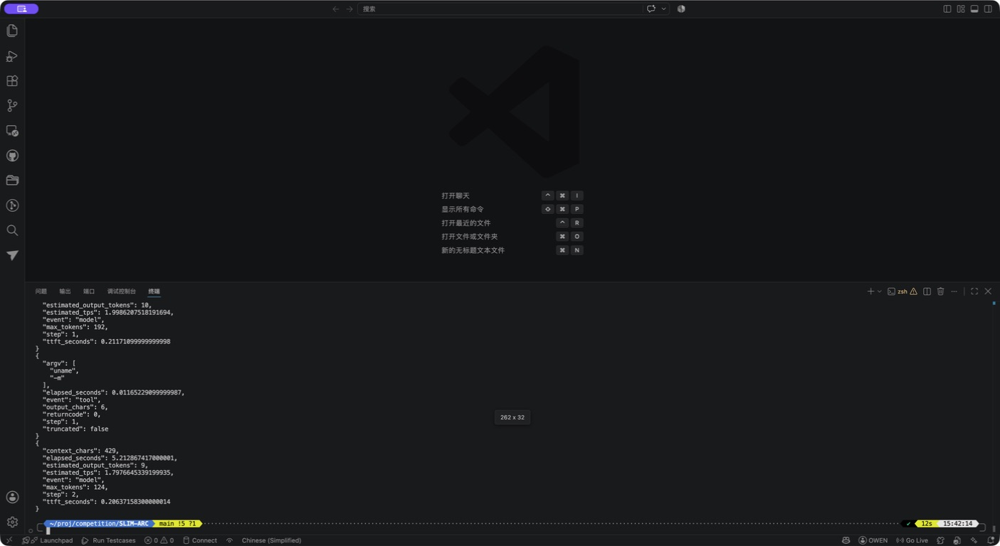

权重访问具有阶段性
Prefill 偏向连续扫描，Decode 偏向复用与稀疏访问。固定页建议会在不同设备上产生相反结果。
80B 级 MoE 的模型文件远大于常见端侧内存，但每个 token 实际只激活极少数专家。问题不是把全部参数塞进内存，而是让正确的页在正确的阶段及时到达。
Prefill 偏向连续扫描，Decode 偏向复用与稀疏访问。固定页建议会在不同设备上产生相反结果。
预取正确仍可能付出过高 I/O 成本；运行时必须同时约束预测、回收、驻留与预算。
NVMe、虚拟磁盘、SSD 与 FUSE/USB 的同步缺页代价不同，统一机制必须允许设备化选择。
02 / MEMORY-AWARE RUNTIME
SLIM-ARC 把模型阶段、专家事实与 cgroup 压力连接成一个闭环。页建议不再是静态开关，而是由当前工作负载和设备状态共同决定。
mmap 按需加载、阶段化 SEQUENTIAL/NORMAL 与有界 readahead。
Temporal 与 cross-layer Router 候选在事实返回后按 generation 精确结算。
以 cgroup headroom、热度和 waste EWMA 约束专家集合与 I/O 预算。
滑动窗口、KV 量化与 FlashAttention 根据上下文和内存余量组合。

03 / EDGE EVIDENCE ATLAS
数据不跨设备相乘，也不把 cold 与 warm 混为一谈。每个结论都绑定模型、缓存状态、内存限制和 workload。
完整实验包含原始日志、结构化 JSON、缓存状态、cgroup 指标和版本身份；负面结果同样保留，用于确定策略适用范围。
阅读 41 页完整评测与附录04 / BOUNDARIES MATTER

RK3588 上静态 RANDOM 只有 0.44/0.26 tok/s；动态 SEQUENTIAL 恢复到 2.84/1.40。
Pi 5 上将容量留给确定复用页，比盲目扩大专家预测更有效。
Mac 正式矩阵中 combined cold wall 回退 19.95%；局部正确不等于端到端更快。
popular-16 增加 I/O、降低命中；cross-layer 高命中也必须支付额外 gate 计算。
05 / LOW-OVERHEAD EXTENSION
在主运行时之外，SLIM-ARC 提供最小 shell harness：压缩上下文、限制输出预算、记录工具调用，并把超时和失败归一化为可复现实验事件。它用于验证“运行大模型”之外的真实工作负载，而不改变核心推理路径。

06 / WATCH THE SYSTEM
两个视频分别介绍 SLIM-ARC 的问题背景、系统机制与最终跨设备实验。可直接在页面内播放，也可跳转至 B 站观看。
07 / READ THE SYSTEM
最终报告按照系统论文结构完整呈现背景、相关工作、动机、系统设计、工程实现、实验评估、边界分析与原始数据附录。